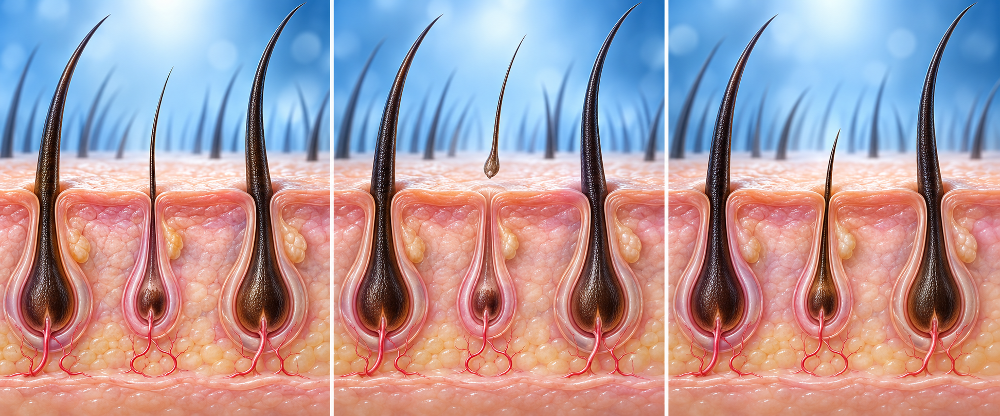

남성형 탈모 — 허가된 치료부터
피나스테리드·두타스테리드 — 두타스테리드 국내 허가: 만 18~50세 남성형 탈모. 여성·어린이는 먹지 마세요. 임신 중·임신 가능 여성은 부서진 알약·새는 캡슐 접촉 금지(닿으면 바로 비누·물로 씻기). 성기능·기분 변화는 상의. 두타스테리드 중단 후 6개월간 헌혈 금지. 전립선 피검사(PSA) 전 두 약을 알려 주세요.
바르는 미녹시딜 — 남녀 모두, 5% 액은 남성만. 중단하면 다시 빠질 수 있어요. 임신 중·임신 가능·수유 중에는 사용 금지. 혈압이 높거나 낮은 분·심장병이 있는 분도 허가사항상 사용 금지이므로 먼저 상의하세요.
먹는 미녹시딜 — 효과와 위험을 함께 확인
국내 고혈압약 → 탈모는 허가 외 처방.
연구 용량은 하루 0.25~5mg. 임의로 복용량을 정하지 마세요.
남성 90명·24주 시험: 먹는 5mg이 바르는 5%보다 우월함은 입증되지 않았어요.
비교시험 4개 종합: 모발 밀도·굵기 차이는 뚜렷하지 않았어요.
1,404명 진료기록: 털 증가 15.1% · 어지러움 1.7% · 붓기 1.3% · 빠른 맥박 0.9%.
비교군 없는 연구로, 장기·드문 위험은 불확실해요.
처방 전: 혈압·맥박, 심장·콩팥병, 임신·수유, 복용약 확인.
혈압약과 함께 쓰면 혈압이 더 떨어질 수 있어요. 두 처방 의사에게 모두 알리세요.
바르는 미녹시딜, 처음엔 더 빠질 수 있어요 — 텃밭 비유

두피 환경이 좋아지며 약했던 털이 먼저 빠지고 다시 자라는 ‘텃밭’ 비유예요. 2주 넘게 계속 더 빠지면 바르기를 멈추고 상의하세요.
최근 치료 — 면역 신호 조절약(JAK 억제제)은 원형탈모용
중증 원형탈모: 바리시티닙·리틀레시티닙은 국내·미국 12세 이상 허가.
국내 보험은 별도: 바리시티닙은 성인 중증 원형탈모에서 선행 치료·중증도·반응 기준 충족 시 적용.
듀룩솔리티닙은 미국 FDA 성인 중증 원형탈모 허가. 국내 허가·급여: 확인 필요
JAK 억제제는 감염·혈전 위험을 확인하고 결핵·혈액검사 후 처방해요. 남성형 탈모와 구별하세요.
남성형 탈모 후보 클라스코테론: 연구 중인 제제예요. FDA 허가 1% 크림은 여드름용이에요.
미녹시딜 시작 뒤 어지럼·두근거림·가슴 통증·붓기·급한 체중 증가 — 바르는 약은 바로 멈추고, 먹는 약은 처방한 선생님께 연락. 가슴 통증이 심하거나 쓰러질 것 같으면 119